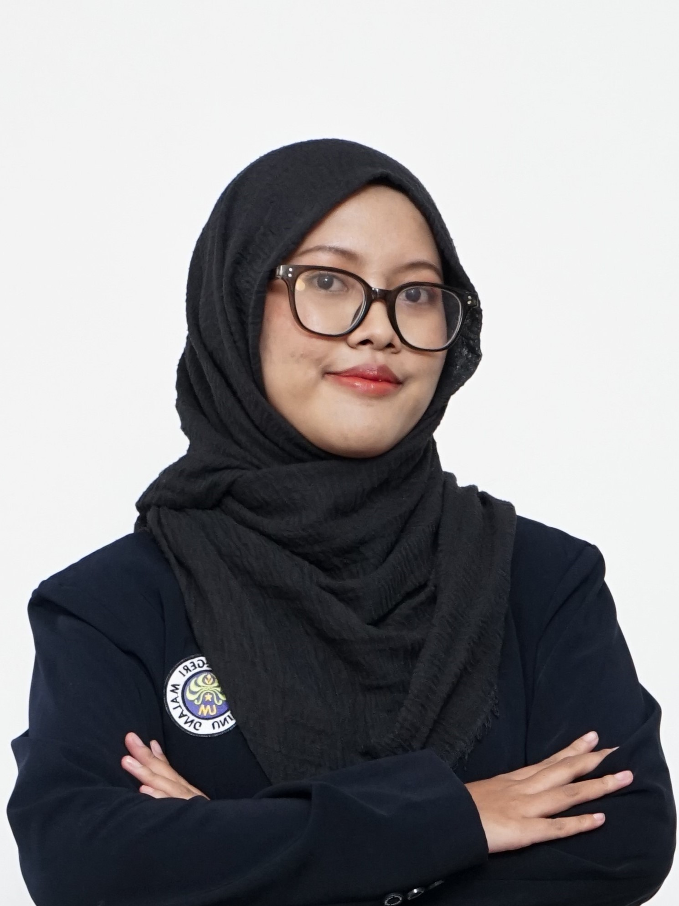

Hello, I am Anjar.
I am an Informatics Engineering student who also works as a freelance web developer and academic private tutor. I enjoy developing websites because I can see how an idea becomes a practical tool that supports someone's work.

I am an undergraduate student of Informatics Engineering at Universitas Negeri Malang, a freelance web developer, and a private tutor. Since 2023, I have developed applications for small businesses, a social foundation, schools, and an international community-service programme. I have also led a development team, taught students, presented research at international conferences, and contributed to registered software copyrights and co-authored academic works. These experiences have shaped how I understand technology and its practical use.
Throughout my university studies, I expect to gain more than theoretical knowledge. I want opportunities to apply what I learn through projects, research, competitions, professional work, and activities beyond the classroom. I aim to improve my technical competence, communication, teamwork, and problem-solving skills. I also hope to meet people with different experiences and perspectives so that, after graduation, I will be prepared to work, pursue further study, or develop a technology-based business.
Areas of Interest
- Full-stack Web Development
- Information Systems
- UI/UX Design
- Educational Technology
- Game Development
- Technical Teaching
Long-term Ambition
I want to establish a stable career in software development while continuing to work on independent projects and teach. In the longer term, I would like to build my own technology product or business based on problems I understand through direct experience.